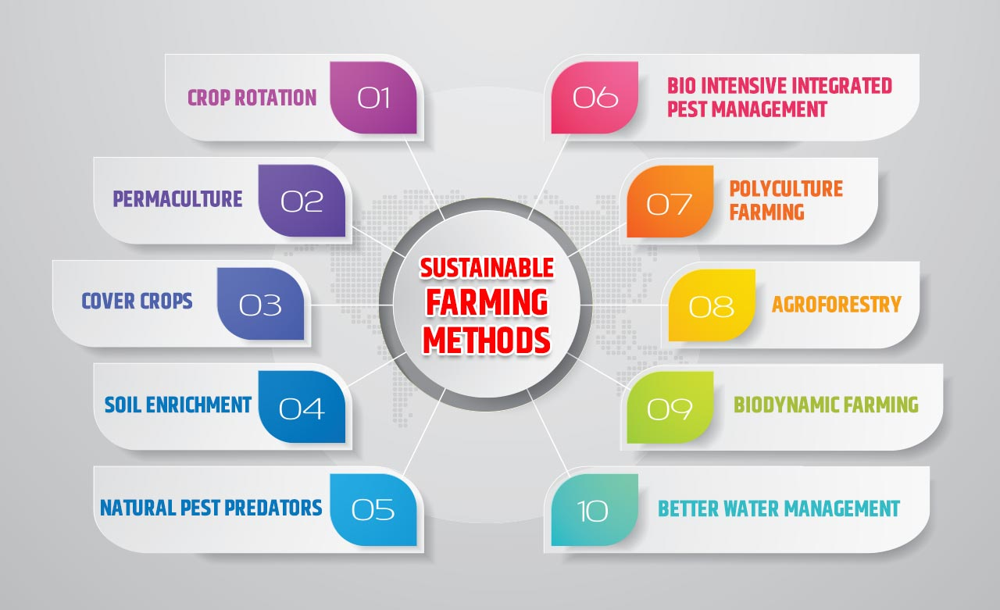

Understanding Modern Agricultural Techniques
Modern agriculture has seen a surge of innovative techniques aimed at increasing efficiency, sustainability, and productivity. These approaches incorporate advanced technology, new farming methods, and better management practices. Here’s a look at some of the most impactful modern agricultural techniques
Read More